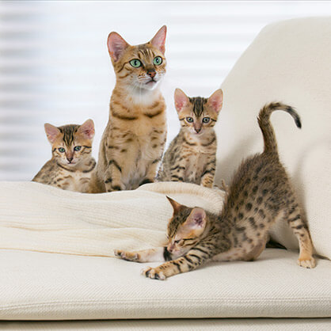

Esterilización de los gatos: Cuando hacerla y qué beneficios trae para su salud
Muchas cosas se han discutido sobre las ventajas o desventajas de la esterilización de tu gato, en esta ocasión vamos a hablar de las ventajas que trae esta decisión para tu felino, así como de los tiempos adecuados para hacerlo, esto puede ayudarte en esta decisión.
Ventajas de la esterilización
Beneficios físicos
En hembras, la esterilización elimina el riesgo de sufrir enfermedades relacionadas con los ovarios o el útero, como por ejemplo cáncer, piometra, ovarios poliquísticos y metritis. También reduce el riesgo de enfermedades inducidas por hormonas, como por ejemplo cáncer de mama o falsos embarazos.
En machos, la esterilización elimina el riesgo de sufrir enfermedades relacionadas con los testículos, como por ejemplo cáncer, y reduce el riesgo de sufrir enfermedades inducidas por la testosterona, como la prostatitis, adenomas y hernias perianales, e hiperplasia prostática benigna.
Tanto en hembras como en machos, la esterilización también evita la propagación de enfermedades de transmisión genética y la frustración sexual.
Beneficios en el comportamiento
En machos, la esterilización reduce la probabilidad de que orine donde no debe y presente otros comportamientos territoriales, como que se pelee con otros gatos. Además, reduce la tendencia a vagar lejos de casa.
En hembras, la esterilización puede reducir el interés en los gatos macho y su propensión a mostrarse excesivamente afectivas o agresivas.
Tiempos adecuados para la esterilización
El veterinario te recomendará cuál es el mejor momento para realizar la castración, pero por lo general la operación se lleva a cabo unos seis meses antes de que la mascota llegue a su edad de madurez sexual. Sin embargo, según el país donde vivas y las recomendaciones de tu veterinario, la castración se puede realizar a partir de las ocho semanas de vida.

 Ventajas de la esterilización
Ventajas de la esterilización